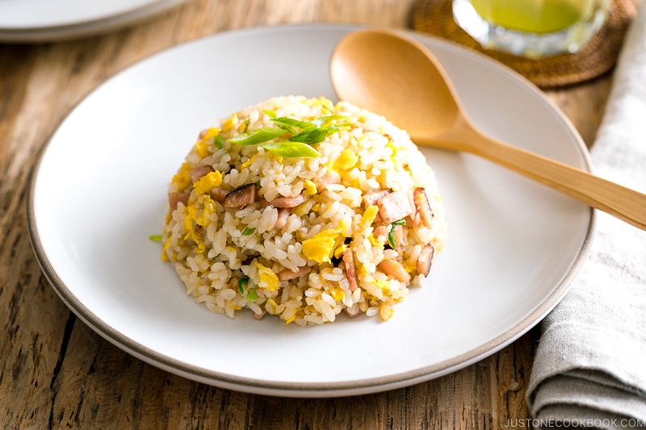

Fried Rice Recipe

Description
Fried rice is a traditional Chinese preparation of cooked rice, vegetables, protein, soy sauce, and aromatics. Over the years, fried rice has evolved to suit local palates all over the world and regularly appears on restaurant menus.
Ingredients
- 3 cups cooked jasmine rice
- 1 tablespoon vegetable oil
- 1/4 large onion, chopped
- 2 cloves minced garlic
- 1 cup frozen peas and carrots
- 2 eggs
- 1/2 teaspoon sesame oil
- 3 tablespoon soy sauce
- 2 green onions
Steps
- Prepare rice according to package directions. Set aside.
- In a large skillet or wok, heat vegetable oil over medium heat and add onion and garlic. Cook until onions are soft, about 2 to 3 minutes. Make sure to stir occasionally to keep the garlic from burning. Add peas and carrots and cook until partially thawed, 1 to 2 minutes.
- Turn the heat up to medium-high and add cooked rice. Cook for another 2 to 3 minutes until rice is nice and hot and starts to brown.
- Reduce heat and push the rice to the sides of the pan, making a hole in the center of the pan for the eggs. Crack eggs into the bottom of the pan.
- Scramble the eggs in the middle of the pan. Once eggs are cooked, stir the cooked egg into the rice.
- Mix soy sauce and sesame oil together and pour over rice. Stir until rice is evenly coated with sauce.
- Top with chopped green onions to serve.